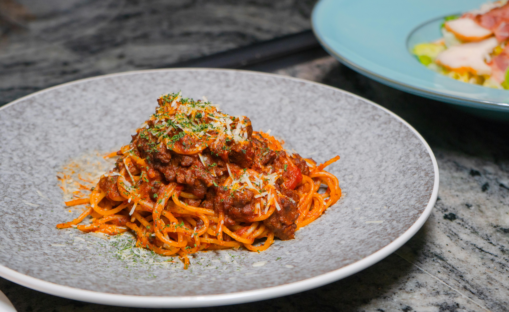

Recipe to make bolognese

Ingredients
- 1 bottle of tomato passata
- 1 onion
- 1 celery stalk
- 1 small carrot
- 500g of minced meat (mixed pork and beef is the best in my opinion)
- spices and herbs (basil, oregano)
- Put olive oil in a large saucepan over medium heat. Add onion, celery, carrot, and 1 pinch salt; cook and stir
until onion turns translucent, about 5 minutes.
- Stir meat into vegetables; cook and stir until meat is crumbly and no longer pink, about 5 minutes. Season with
1 1/2 teaspoons salt, nutmeg, cayenne pepper, and black pepper.
- Pour tomato mixture into the pan; fill the tomato can with a bit of water, shake it and stir into sauce. Bring
to a boil.
- After the meat is soft and tender, mix in some fresh herbs, cook it for 2 more minutes and remove from heat.
Serve hot over pasta. Enjoy!
Return to homepage